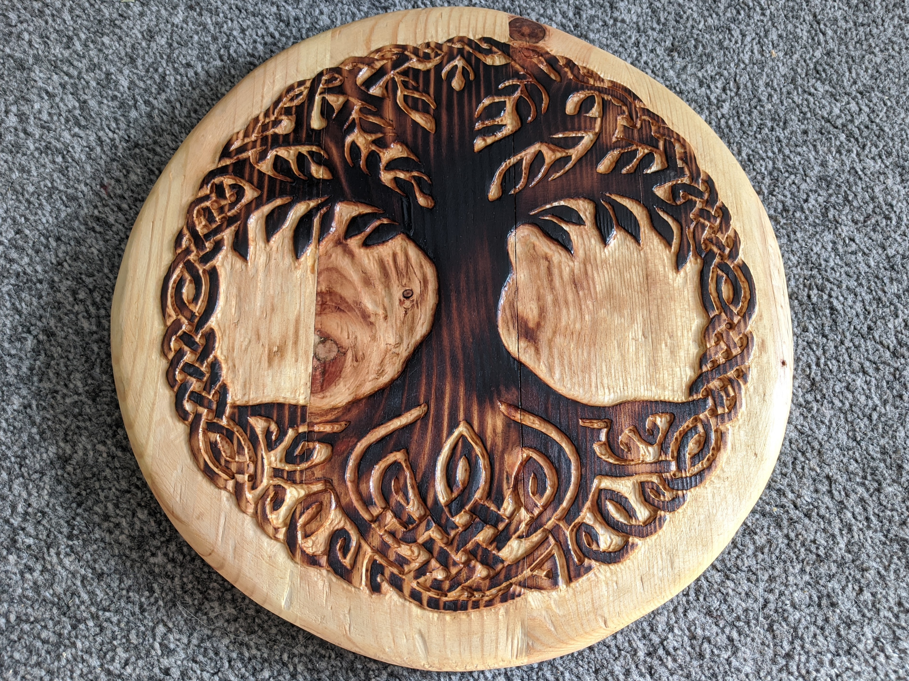

<aside class="side-panel">
    <a href="index.html">
    <div class="logo">
         <!-- Replace with actual logo path -->
    </div>
    <div class="site-name">
        <h1> Chad Nippard</h1>
    </div>
    </a>
    <nav>
        <ul>
            <li><a href="projects.html">Projects</a></li>
            <li><a href="about.html">About Me</a></li>
            <li><a href="contact.html">Contact Me</a></li> 
        </ul>
    </nav>
    
    <footer class="nav-footer">
        <p>&copy; 2024 chadnippard.com. All Rights Reserved.</p>
        
    </footer>
</aside>